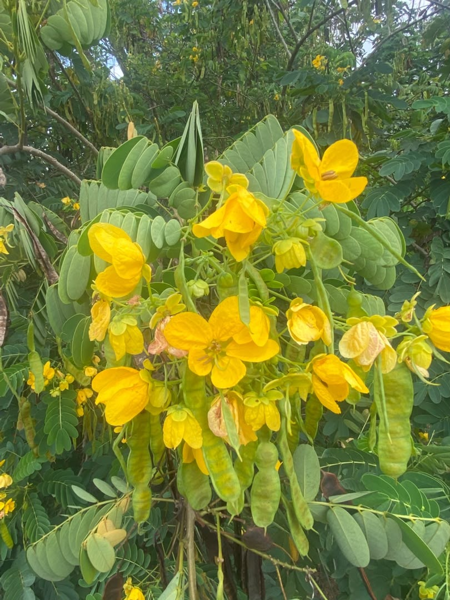

Problème résolu par les Dicotylédones :
Compter sur le vent fait perdre beaucoup de pollen : il faut un moyen plus sûr de l'amener jusqu'à une autre fleur.
Innovation apportée par les Dicotylédones :
Les fleurs colorées et parfumées attirent les insectes, qui transportent le pollen d'une fleur à l'autre. Le fruit protège la graine et aide à la disperser.


Appareil reproducteur du Senna sp
L'appareil reproducteur du Senna sp. est constitué de fleurs généralement jaunes, regroupant des organes mâles (étamines), qui produisent le pollen, et des organes femelles (pistil), composés du stigmate, du style et de l'ovaire contenant les ovules. Après la pollinisation et la fécondation, l'ovaire se transforme en gousse contenant des graines qui permettront la formation de nouvelles plantes.
Senna sp
Senna sp. est une plante dicotylédone appartenant à la famille des Fabaceae. Elle possède une racine pivotante, une tige ramifiée et des feuilles composées pennées. Ses fleurs sont généralement jaunes et ses fruits sont des gousses.